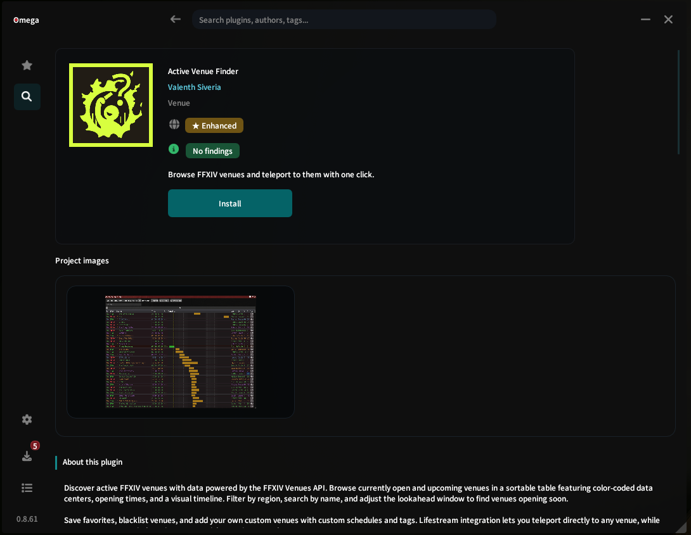

Find it
The wider public ecosystem.
Official feeds, public repositories, mirrors, and independent projects can all be easier to find in one in-game market.
What Omega adds
Omega brings the wider public plugin world into the game, together with the things that matter before you install: where a plugin came from, what changed, what it depends on, and what stood out in a scan.
It is not a second loader. Dalamud still handles the plugin lifecycle; Omega gives us more context around it.

What is different
The name, author, and description are useful. They are not the whole story. Omega keeps the useful details close to the plugin instead of making you chase them across repositories and project pages.
Find it
Official feeds, public repositories, mirrors, and independent projects can all be easier to find in one in-game market.
Trace it
Omega can keep repositories, public project sources, versions, hashes, and dependency relationships near the plugin.
Inspect it
Security findings, observed capabilities, endpoints, and known advisories provide context without pretending to make a plugin safe.
The product record
Repository, project, package, and source details stay beside the plugin instead of disappearing behind a generic install screen. When several sources have the same plugin, that comparison matters too.
Omega does not call one source perfect. It gives us more of the public record before we decide whether to use it.

Still Dalamud
Omega does not replace Dalamud's plugin lifecycle. Installation, updates, disabling, and removal remain Dalamud responsibilities.
Install Omega